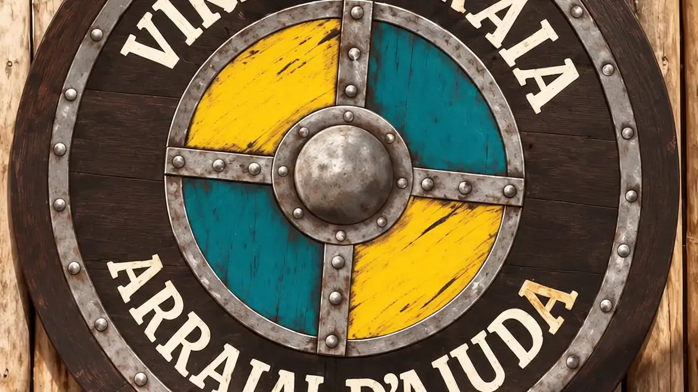
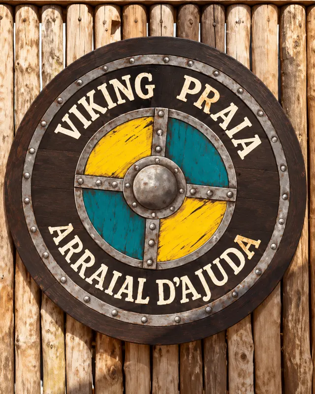
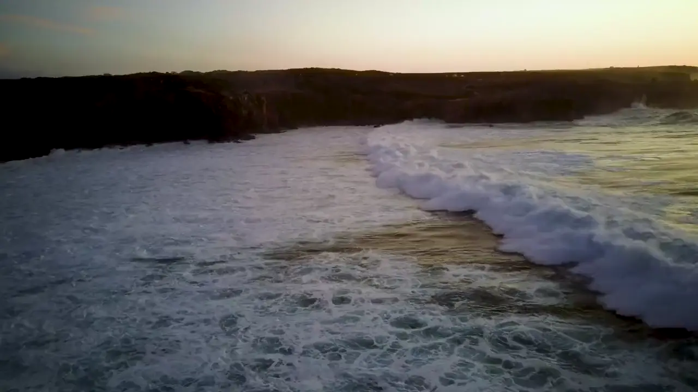

Steak & Beer · Bar de Praia
VIKING PRAIA
“Sabores, praia e bons momentos em Arraial d’Ajuda.”
Petiscos, chopp gelado e experiências à beira-mar na Praia do Parracho.

ParrachoArraial d’Ajuda · BA
Experiência Viking
Mais que uma barraca de praia.
Aqui o dia passa devagar. Escolha sua sombra, peça um petisco feito na hora e um chopp bem gelado, e deixe o mar do Parracho fazer o resto.
- 9h às 17hFuncionamento
- Chopp geladoPara acompanhar
- Pé na areiaPraia do Parracho
Especial
Do mar para a mesa.
Sabores que combinam com sol, praia e uma bebida gelada.
Ambiente
O dia inteiro de frente para o mar.


@vikingsteakbeer
Viking Praia no Instagram
Pratos saindo da cozinha, a areia, o mar e o movimento do dia. Acompanhe por lá.
@vikingsteakbeerLocalização
Nos encontre no paraíso.
- OndePraia do Parracho
Arraial d’Ajuda – Bahia - QuandoFuncionamento: 9h às 17h
Carregando o mapa da Praia do Parracho
Contato
Fale com a gente.
WhatsApp: (45) 9984-7212
Instagram: @vikingsteakbeer
Praia do Parracho – Arraial d’Ajuda/BA
9h às 17h